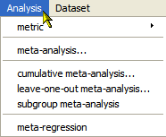
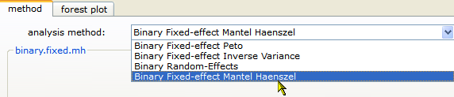
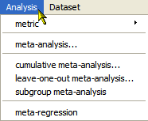
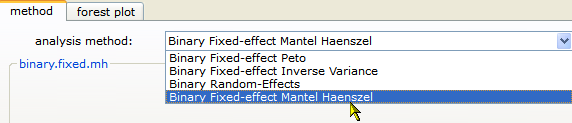
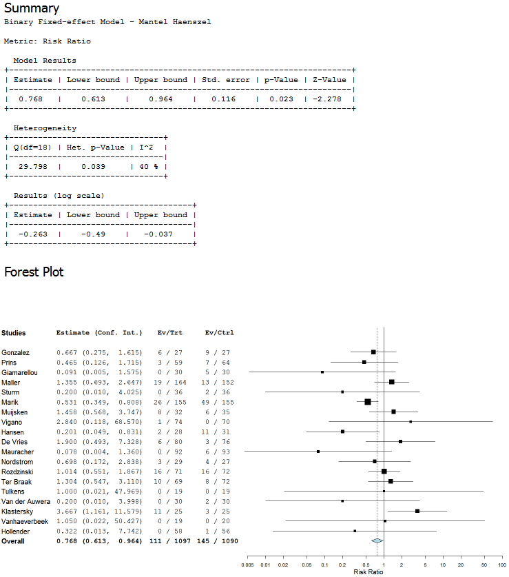

See Metric Options for a complete description of the available metrics.


See Analysis Options for a complete description of the available methods and options shown in the dialog.
This section provides an example that illustrates how to perform a meta-analysis. To run the analysis, first open the sample data set amino.oma, described in Opening an Existing Data Set. Then do the following steps:

See Metric Options for a complete description of the available metrics.

See Analysis Options for a complete description of the available methods and options shown in the dialog.
The results are displayed in the results/analysis window, as shown below:

 | Opening an Existing Data Set |